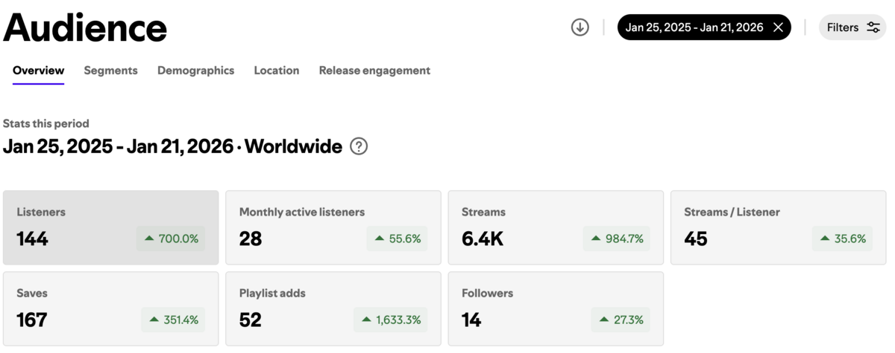
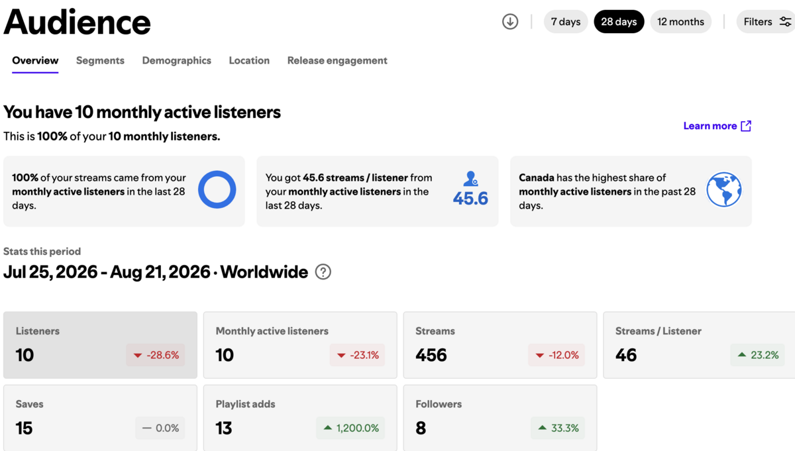
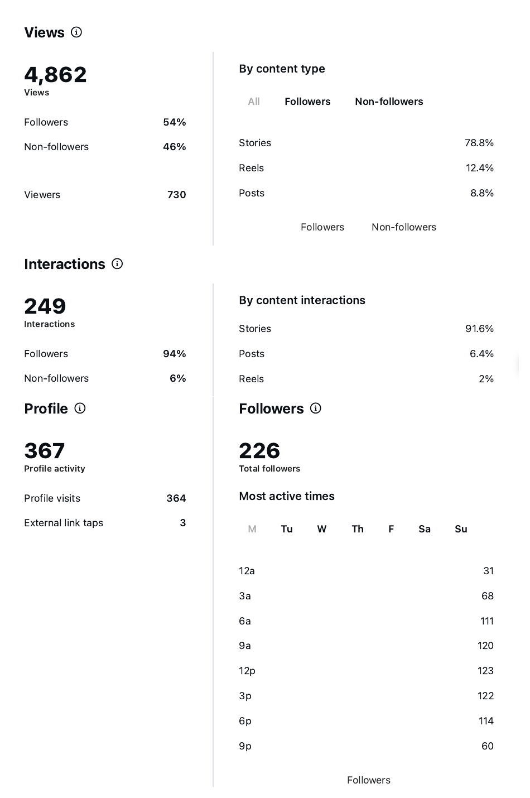

I lost my audience by accident. One number came back exactly the same.
I rebuilt an audience from zero after an account mistake wiped three years of data. Fourteen times the listeners, and the number that mattered did not move.
Mura is a project I built to explore different kinds of art. It takes poetry, turns it into music, and adds visuals.
At first it was just a hobby. No numbers were involved. There was no audience and no expectation of being heard.
The first attempt to change that was an installation with Costa Giannoussis, an artist in Montreal — my poems written on small pieces of paper, hung on his paintings. It never happened. The venue was sold and the project closed with it.
So I went online instead, posting poems on Instagram and TikTok. Simple posts, a drawing with each one. The poems felt finished without the drawings, but I thought words plus visuals would reach two audiences instead of one — people who read, and people who look.
Then I started experimenting with the material itself. To give each poem a voice I used Suno, an AI music generator. People argue about whether using AI to make music is wrong. Mura is a poetry project, and I have never claimed a person sang these. Whatever the argument, people liked how the poems sounded once they became music. Over twelve months my listeners went from 18 to 144, and streams passed 6,400. Not huge numbers, but a result.

The numbers were going up. Then I noticed something: as soon as I posted less, or did not post at all, the listeners went down.
One day I saw 72. Then 68. Then 65, 60, 58. It was hard to look at.
I did not treat it as a failure. It was a call to action. I needed to change something — post more, work on the visuals, try something different.
That is when I started opening my insights on Instagram and Spotify properly. It helped me see what was getting attention, and which followers were responding to which material. Once I understood what I was looking at, the next steps were easier to decide.
But then I made a mistake. I decided to change my artist name across all platforms, and I accidentally created a new profile instead of just renaming the old one. I could not move the data. I realised too late.
Zero did not scare me. Starting again was not the barrier I expected. I put up the first material under the new name, posted across social media, and people started listening. I watched the followers come back — 1, 2, 3… 10.
Then the number stopped growing. I had accounts full of posts, but I was posting only occasionally. I was finishing college and preparing for graduation, and work took the rest of my time. That actually helped me to understand that a brand like Mura needs more time than I was giving it, and that posting once in a while changes nothing.
The picture got clear when I put the two accounts side by side. Two profiles built years apart, one with fourteen times the audience of the other. I expected the smaller one to look worse.
| Old profile (12 months) | New profile (28 days) | |
|---|---|---|
| Listeners | 144 | 10 |
| Streams | 6,400 | 456 |
| Streams per listener | 45 | 45.6 |

Fourteen times the audience. The same intensity per person. Nothing that happened between those two accounts changed what a single listener was worth.
So I keep asking myself one question. Does chasing more listeners make sense if each one behaves the same either way?
The answer I have so far is that posting more gets more attention, but there is a trick: what you post and how you post it matters as much as how often. I was posting the same thing over and over and my numbers stayed flat.
When it comes to my Instagram account, Reels bring strangers in. Stories are where the people who already follow me actually respond — 91.6% of my interactions happen there, against 6.4% for posts and 2% for Reels. The thing that reaches the most people and the thing that gets the most response are not the same thing.
So does that mean growing the audience is pointless? No. I still want the number to go up, and I think anyone building something should. The more people know the brand, the more people know the brand. This is how it actually works. People don't keep secrets, especially about something they like. Every listener is someone who might tell one more.
What I got wrong was thinking that was the only job.
For three years I posted visuals, music and poems and gave nobody anything to do with them. No question, no button, no reason to answer. The number that proves it is sitting in my Instagram insights: last month 364 people visited my profile and 3 of them tapped the link. The interest was there. I just never asked for anything.

That's the part that doesn't grow on its own. Reach is something the platform gives you. A response is your responsibility to ask for. It could be a question in the caption, a button, a link that leads somewhere worth going.
And if a business needs the number to move faster than word of mouth moves it, the honest answer is money. Platform ads, or paying someone whose audience already trusts them. I did neither. I expected the poems to do all the work, and they did exactly the minimum.
So here is what I am doing about it, and the number I am judging it by.
Every Reel now ends with the same ask: tell me what to write next. Not "follow for more". An actual invitation to hand me a subject, a feeling, a line they want to hear back. It costs a viewer nothing to answer, and they actually like it when they are part of the story. It also gives me very important information: what this audience wants before I make it. Stories carry the same question on the days I do not post a Reel.
The number I am watching is link taps. Three out of 364 profile visits last month. I want 30, and I am giving it four weeks. If it does not move, then the approach should be reconsidered.